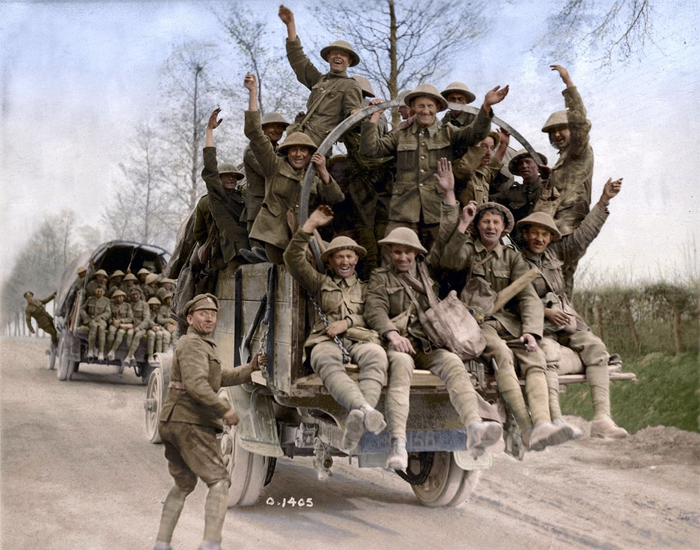

Overview of the Battle
The Battle of Vimy Ridge was one of the most significant battles of World War I, involving Canadian forces who fought to capture the ridge from German troops in April 1917.


The Battle of Vimy Ridge was one of the most significant battles of World War I, involving Canadian forces who fought to capture the ridge from German troops in April 1917.
The Canadian corps was ordered to seize Vimy ridge and battle occurred on 9-12 april 1917 and this battle occurred on the northern France border to Belgium.

In 1914 and 1915, The French had already attempted to take Vimy Ridge back, but were unsuccessful. In 1917, the British and the Canadians attacked together with around 100,000 soldiers. The French were so focused on taking the ridge back for 2 main reasons. The location of the ridge was perfect for war because it is a massive hill, and is perfect for monitoring your surroundings, and scanning for enemies. Vimy ridge was also an industrial and railway region for France, and was important for their economy.

All four divisions of the Canadian army fought together for the first time, alongside the British. They were fighting the Germans, who were occupying the area. /p> 
The living conditions in the Vimy Ridge trenches were extremely harsh. These trenches were filled with mud, often flooded, and the soldiers inside were constantly waiting for an enemy attack. Alongside the trenches were barbed wire and shell craters with machine gunners and snipers on the enemy sides. Soldiers often were required to peek over the edge of the trench to attack, and with all these circumstances, this was obviously super dangerous. When a massive attack was played out and a big group of soldiers started running to the enemy sides, many lives were lost, and the dead bodies were often never recovered.

Both sides used machine guns to support defence.the soldiers themselves were armed with rifles and grenades. Rifles were the most commonly used in WW1 because The combination of magazine-held rounds, reliable ammunition, and greatly increased range made them formidable weapons in the hands of trained infantry. If you ask why they commonly used rifles why not machine guns because machine guns were large, very heavy and hard to move. These are the reasons they commonly used rifles but machine guns were a very important weapon in defence.Grenades One of the most common grenades used in the battle of Vimy Ridge was the No. 5 MK. 1 Hand Grenade “This grenade, also known as a Mills bomb, was one of the war's most effective infantry weapons. It was first issued to troops in the spring of 1915. After pulling the safety pin, the thrower had about five seconds before the grenade exploded. Generally lethal within a ten metre radius, the explosion sent pieces of metal up to a range of 200 metres.” (Canadian War Museum)